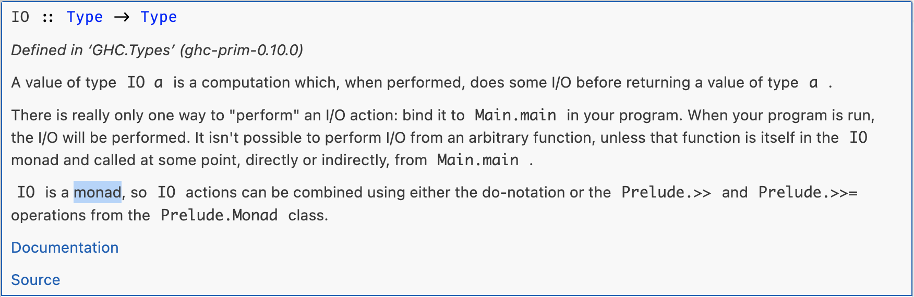

Dear Professor Church,
Russell had the ι operator, Hilbert had the ε operator. Why did you choose λ for your operator?
eeny, meeny, miny, moe
\[ (\lambda a b . \sqrt{a^2 + b^2}) \enspace 3 \enspace 4 \]
++++++++[>++++[>++>+++>+++>+<<<<-]>+>+>->>+[<]<-]>>.>---.+++++++..+++.>>.<-.<.+++.------.--------.>>+.>++.
fun f(x: Any) = x
\[ (\lambda x.\lambda y.y) ((\lambda x.x x) (\lambda x.x x)) \]
\[ (\lambda f.f (f x)) ((\lambda x.\lambda y.x) (\lambda x.y)) \]
\[ (\lambda f.\lambda x.f (f x)) (\lambda f.\lambda x.f (f x)) (\lambda x.x) (\lambda x.x) \]
For example, let’s look at evaluating \(not\ true\)
\( \renewcommand{\t}[1]{\mathtt{#1}} \newcommand{\infrule}[2]{\displaystyle \dfrac{#1}{#2}} \newcommand{\trule}[1]{(\textbf{#1})} \)
In any language design, the total time spent discussing a feature in this list is proportional to two raised to the power of its position.
- Semantics
- Syntax
- Lexical syntax
- Lexical syntax of comments
In any language design, the total time spent discussing a feature in this list is proportional to two raised to the power of its position.
- Semantics - \(2^0\)
- Syntax - \(2^1\)
- Lexical syntax - \(2^2\)
- Lexical syntax of comments - \(2^3\)
Lambda terms: variables, abstraction, application
Some interesting combinators:
Even the I combinator is simply SKK
Formally:
where \(\mathtt{fv}(e)\) is the set of free variables in \(e\).
For example, consider an expression in lambda calculus extended with natural numbers and addition. Note that expression \((2+2)\) is evaluated to normal form before being bound.
In Haskell, we might represent lambda calculus terms like this:
data Term
= Var String
| Lam String Term
| App Term Term
Hello world
main :: IO ()
main = putStrLn "Hello world"
Too late…
main :: IO ()
main = putStrLn "Hello world"

Interpreter for untyped lambda calculus
Structural, syntax-oriented and inductive
Evaluation context for CBV λ calculus, extended with a let expression:
\( \mathcal{E}\ ::=\ []\ |\ v\ \mathcal{E}\ |\ \mathcal{E}\ e\ |\ \mathtt{let}\ x = v\ \mathtt{in}\ \mathcal{E} \)
Very interesting, but - some other time…
let expressions
\[
\mathtt{let}\ a = e\ \mathtt{in}\ b \quad := \quad (\lambda a.b) e
\]For now, semantically the same as an applied lambda
let-start branch to use as a starting pointlet in Haskell has different semantics - more on this laterlet expressions, optionally terminated by semicolon
\[
\mathtt{let}\ a = e; \quad := \quad \lambda a.e
\]Semantically the same as a lambda, optionally η-expanded
\[ \mathtt{let}\ if\ cond\ then\ else\ =\ ... \quad := \quad \mathtt{let}\ if = \lambda cond.\lambda then.\lambda else.\ ... \]
let branch to use as a starting pointlet keyword[A type system is a] tractable syntactic method for proving the absence of certain program behaviors by classifying phrases according to the kinds of values they compute. — Benjamin Pierce
What part of …
… do you not understand?
Ignoring polymorphism for now, omitting the Gen and Inst rules:
Well-typed programs cannot “go wrong”. — Robin Milner